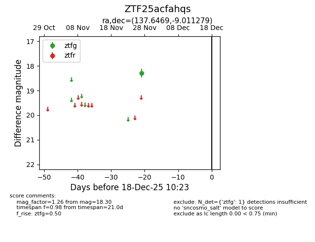
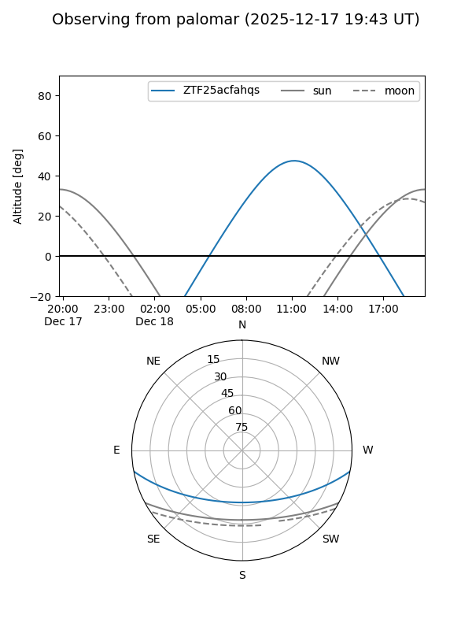

ZTF25acfahqs
Target ZTF25acfahqs at 2025-12-18 11:17
Aliases and brokers:
FINK: fink-portal.org/ZTF25acfahqs
Lasair: lasair-ztf.lsst.ac.uk/objects/ZTF25acfahqs
ALeRCE: alerce.online/object/ZTF25acfahqs
alt names
ZTF25acfahqs (ztf,fink_ztf)
Coordinates:
equatorial (ra, dec) = 137.6469,-9.01128
equatorial (HMS+DMS) = 09:10:35.25,-09:00:40.60
galactic (l, b) = (238.9731,+25.47266)
Photometry
last ztfg=18.30
1 ztfg detections
Lightcurve

Visibility


Additional plots